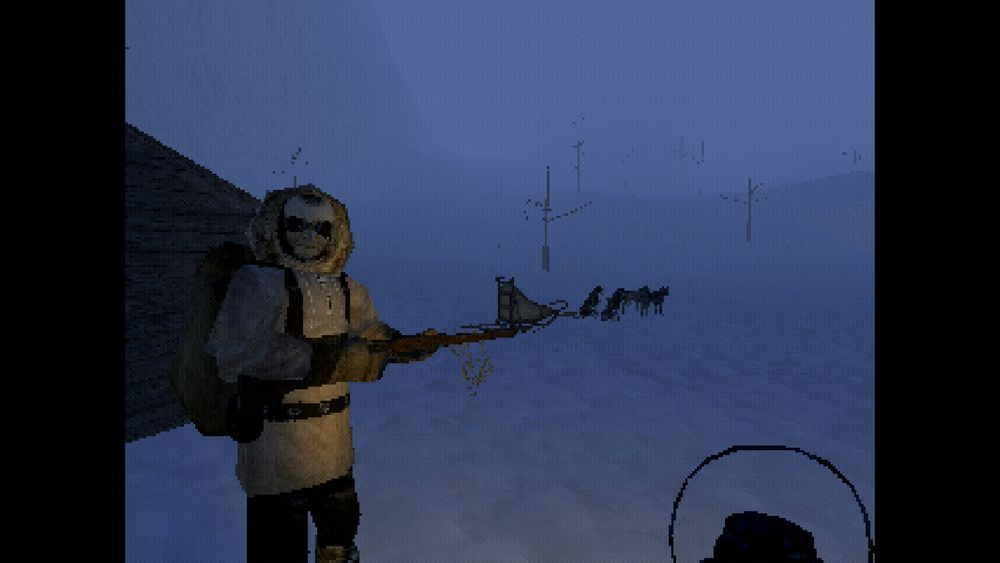

That Which Gave Chase

Released in 2023, played on Linux in 2024.
spoilers
Mush your dog sled across cruel Arctic wastelands, driven onwards by a brisk and intense companion, who hired you to take him back to some remote spot, where it becomes apparent he had some sort of revelation, or maybe a breakdown.
The low-res, dithered presentation conveys the harsh, blinding conditions, as you struggle to make out details through the relentless wind and ice. The days and nights of the harsh journey blur into one another, smash cuts leaving you only fragmentary, disjointed memories: sledding across the ice; nights in crude wooden huts, collapsing into rough bunks; righting the sled while your companion curses you for a fool; silent moments alone, outside in the dark; mounting the sled before dawn. In this, one can't help but be discomfitted by the echoes of Alan Moore's Nemo: Heart of Ice, and the Lovecraftian influences upon which it builds. The sense is of a protracted, exhausting time spent covering the distance, through punishing conditions, and it's surprisingly evocative.
The narrative leans into the disorientation, making nothing clear. Your companion becomes increasingly cryptic. He urges you onward, never pausing more than absolutely necessary. The deer behave increasingly strangely. Your companion regales you with sickening tales of the investigative mistreatment he subjected them to on his previous visit. By the time the strange mushrooms come into play it is very obvious that you are in a place to which you should never have come, very far from anywhere or anyone, with mounting dread, alone with with a madman. What happened the last time he took this route? What did he leave behind here? What awaits at your journey's end?
It's hard to know whether the difficulty of interpretation, or the non-literal aspects of your journey, are intended as the result of your character's mushroom-induced fever, or the pretensions of intrusively figurative allusions. Most likely, it seems to be both. The deliberate ambiguity runs deep.
Doesn't outstay its welcome, all done in an hour. But the memories remain.